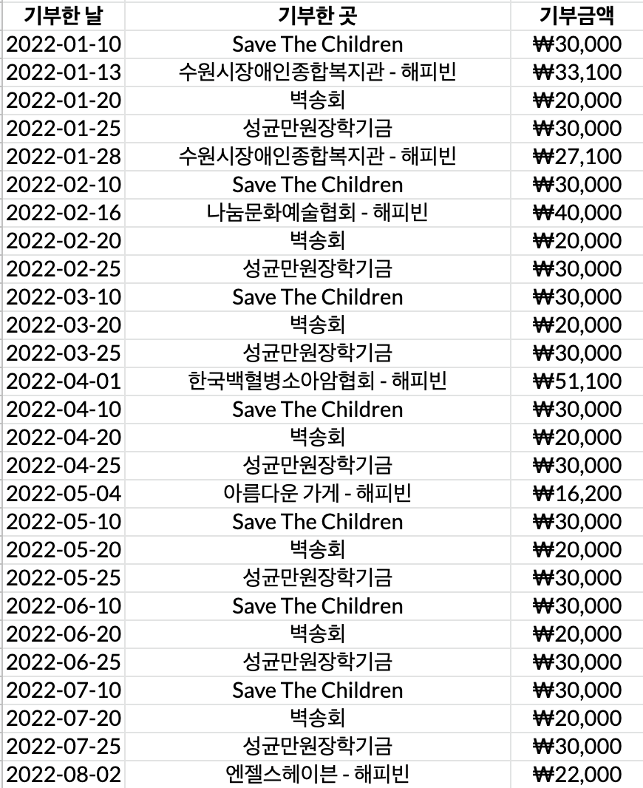

무언가 정신없이 돌아가는 2022년인데 그래도 생일은 돌아왔구나
이번에도 외국인 일본 도쿄에서 생일을 보냈구나 무언가 오묘하면서도 독특하다는 느낌만 있구나
어떠하든 생일이란 축하할 일인 점은 맞는 것 같다.
무언가 생일마다 정리하는 기부금 얘기도 이번에는 특별한 것이 없는 것 같구나
보는 것처럼 늘 같은 날짜에 기부하는 것과 네이버 포인트가 쌓이게 되면 하는 기부
어쩌면 그만큼 기부에 무디어졌다는 아쉬움과 그래도 이렇게 생일을 핑계로 점검을 한다는 다행스러움이 같이 있구나
여하튼 생일 축하라는 말을 다시 한 번 남겨보며 새로운 공간에서 처음 적는 글임을 함께 남겨본다.